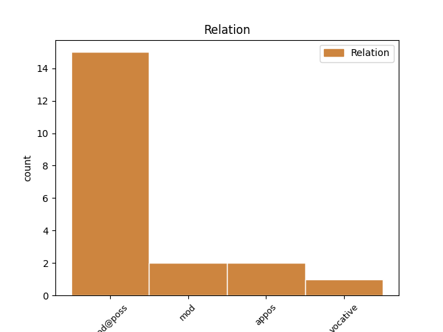
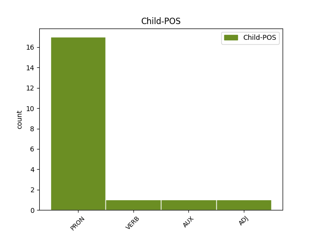

Distribution of features within this leaf



Agreement Rules sorted by frequency.
- When the dependent token is the modifer(mod@poss) of the head token, and the head token is NOUN and the dependent token is PRON.
1 چۈنكى _ _ _ _ 0 _ _ _
2 ، _ _ _ _ 0 _ _ _
3 مېۋىلەردىن _ _ _ _ 0 _ _ _
4 مول _ _ _ _ 0 _ _ _
5 ھوسۇل _ _ _ _ 0 _ _ _
6 ئېلىش _ _ _ _ 0 _ _ _
7 ئۇلارنى _ _ _ _ 0 _ _ _
8 خوشال _ _ _ _ 0 _ _ _
9 قىلغىنى _ _ _ _ 0 _ _ _
10 بىلەن _ _ _ _ 0 _ _ _
11 ، _ _ _ _ 0 _ _ _
12 ئۇلارنىڭ ئۇلار PRON P Case=Gen|Number=Plur|Person=3|PronType=Prs 15 mod@poss _ Translit=ularning
13 قىلىشقا _ _ _ _ 0 _ _ _
14 تىگىشلىك _ _ _ _ 0 _ _ _
15 ئىشلىرىمۇ ئىش NOUN N Case=Nom|Number=Plur|Number[psor]=Plur,Sing|Person[psor]=3 0 _ _ _
16 بەك _ _ _ _ 0 _ _ _
17 كۆپ _ _ _ _ 0 _ _ _
18 ئىدى _ _ _ _ 0 _ _ _
19 . _ _ _ _ 0 _ _ _
1 دېمەك _ _ _ _ 0 _ _ _
2 ، _ _ _ _ 0 _ _ _
3 بىز بىز PRON P Case=Nom|Number=Plur|Person=1|PronType=Prs 4 appos _ Translit=biz
4 ئۇيغۇرلارنىڭ ئۇيغۇر NOUN N Case=Gen|Number=Plur 0 _ _ _
5 تەلىيى _ _ _ _ 0 _ _ _
6 يېقىنقى _ _ _ _ 0 _ _ _
7 ئەسىر _ _ _ _ 0 _ _ _
8 مابەينىدە _ _ _ _ 0 _ _ _
9 بۇ _ _ _ _ 0 _ _ _
10 كەشپىيات _ _ _ _ 0 _ _ _
11 ئارقىلىق _ _ _ _ 0 _ _ _
12 ئوڭ _ _ _ _ 0 _ _ _
13 كەلدى _ _ _ _ 0 _ _ _
14 . _ _ _ _ 0 _ _ _
1 _ _ _ _ _ 0 _ _ _
2 _ _ _ _ _ 0 _ _ _
3 ئالىيلىرى ئالىي ADJ N Case=Nom|Number=Plur|Number[psor]=Plur,Sing|Person[psor]=3 9 vocative _ SpaceAfter=No|Translit=aliyliri
4 ، _ _ _ _ 0 _ _ _
5 قارىسىلا _ _ _ _ 0 _ _ _
6 ، _ _ _ _ 0 _ _ _
7 نېمىدېگەن _ _ _ _ 0 _ _ _
8 نەپىس _ _ _ _ 0 _ _ _
9 گۈللەر گۈل NOUN N Case=Nom|Number=Plur 0 _ _ _
10 ! _ _ _ _ 0 _ _ _
11 نېمىدېگەن _ _ _ _ 0 _ _ _
12 ئېسىل _ _ _ _ 0 _ _ _
13 رەڭ _ _ _ _ 0 _ _ _
14 ! _ _ _ _ 0 _ _ _
15 _ _ _ _ _ 0 _ _ _
16 _ _ _ _ _ 0 _ _ _
1 ئاخىرى _ _ _ _ 0 _ _ _
2 : _ _ _ _ 0 _ _ _
3 " _ _ _ _ 0 _ _ _
4 بۇنداق _ _ _ _ 0 _ _ _
5 پىشمىغان پىش VERB N Mood=Ind|Number=Plur|Person=3|Polarity=Neg|Tense=Past|VerbForm=Fin 6 mod _ Translit=pishmighan
6 ئۈزۈملەرنى ئۈزۈم NOUN N Case=Acc|Number=Plur 0 _ _ _
7 يەپ _ _ _ _ 0 _ _ _
8 نېمە _ _ _ _ 0 _ _ _
9 قىلاي _ _ _ _ 0 _ _ _
10 " _ _ _ _ 0 _ _ _
11 دەپ _ _ _ _ 0 _ _ _
12 ئۆز-ئۆزىگە _ _ _ _ 0 _ _ _
13 تەسەللى _ _ _ _ 0 _ _ _
14 بېرىپتۇ _ _ _ _ 0 _ _ _
15 . _ _ _ _ 0 _ _ _
Disagree Examples:
1 ئۇنىڭ ئۇ PRON P Case=Gen|Number=Sing|Person=3|PronType=Prs 4 mod@poss _ Translit=uning
2 قەۋەت _ _ _ _ 0 _ _ _
3 - _ _ _ _ 0 _ _ _
4 قەۋەتلىرى قەۋەت NOUN N Case=Nom|Number=Plur|Number[psor]=Plur,Sing|Person[psor]=3 0 _ _ _
5 كىتاب _ _ _ _ 0 _ _ _
6 ۋاراقلىرى _ _ _ _ 0 _ _ _
7 ، _ _ _ _ 0 _ _ _
8 ئۆزى _ _ _ _ 0 _ _ _
9 قېلىن _ _ _ _ 0 _ _ _
10 كىتابقا _ _ _ _ 0 _ _ _
11 ئوخشاپ _ _ _ _ 0 _ _ _
12 تۇرمامدۇ _ _ _ _ 0 _ _ _
13 . _ _ _ _ 0 _ _ _
1 _ _ _ _ _ 0 _ _ _
2 مۇئەللىملەر _ _ _ _ 0 _ _ _
3 ئوقۇغۇچىلارنىڭ _ _ _ _ 0 _ _ _
4 ھەممىسىنى _ _ _ _ 0 _ _ _
5 سىلىنىڭ سىلى PRON P Case=Gen|Number=Sing|Person=2|Polite=Form|PronType=Prs 9 mod@poss _ Translit=silining
6 « _ _ _ _ 0 _ _ _
7 تۆگە _ _ _ _ 0 _ _ _
8 دۆڭ»دىكى _ _ _ _ 0 _ _ _
9 قوناقلىرىنىڭ قوناق NOUN N Case=Gen|Number=Plur|Number[psor]=Plur,Sing|Person[psor]=3 0 _ _ _
10 بېشىنى _ _ _ _ 0 _ _ _
11 ئۈزدۈرۈشكە _ _ _ _ 0 _ _ _
12 ئېلىپ _ _ _ _ 0 _ _ _
13 كەتتى _ _ _ _ 0 _ _ _
14 . _ _ _ _ 0 _ _ _
1 ئۇنىڭ ئۇ PRON P Case=Gen|Number=Sing|Person=3|PronType=Prs 7 mod@poss _ Translit=uning
2 ئويناپ _ _ _ _ 0 _ _ _
3 تۇرغان _ _ _ _ 0 _ _ _
4 قارا _ _ _ _ 0 _ _ _
5 مۇنچاقتەك _ _ _ _ 0 _ _ _
6 قوي _ _ _ _ 0 _ _ _
7 كۆزلىرى كۆز NOUN N Case=Nom|Number=Plur|Number[psor]=Plur,Sing|Person[psor]=3 0 _ _ _
8 بىر _ _ _ _ 0 _ _ _
9 ماڭا _ _ _ _ 0 _ _ _
10 ، _ _ _ _ 0 _ _ _
11 بىر _ _ _ _ 0 _ _ _
12 مومىسىغا _ _ _ _ 0 _ _ _
13 تىكىلەتتى _ _ _ _ 0 _ _ _
14 . _ _ _ _ 0 _ _ _
1 ئۇنىڭ ئۇ PRON P Case=Gen|Number=Sing|Person=3|PronType=Prs 3 mod@poss _ Translit=uning
2 ئىنچىكە _ _ _ _ 0 _ _ _
3 قاشلىرى قاش NOUN N Case=Nom|Number=Plur|Number[psor]=Plur,Sing|Person[psor]=3 0 _ _ _
4 ئاستىدىكى _ _ _ _ 0 _ _ _
5 قاپقارا _ _ _ _ 0 _ _ _
6 كۆزلىرىدىن _ _ _ _ 0 _ _ _
7 تاراملاپ _ _ _ _ 0 _ _ _
8 قۇيۇلۇۋاتقان _ _ _ _ 0 _ _ _
9 ياش _ _ _ _ 0 _ _ _
10 توختىمايتتى _ _ _ _ 0 _ _ _
11 . _ _ _ _ 0 _ _ _
1 مەن _ _ _ _ 0 _ _ _
2 ئۇنىڭ ئۇ PRON P Case=Gen|Number=Sing|Person=3|PronType=Prs 3 mod@poss _ Translit=uning
3 كۆزلىرىدىن كۆز NOUN N Case=Abl|Number=Plur|Number[psor]=Plur,Sing|Person[psor]=3 0 _ _ _
4 ئېقىۋاتقان _ _ _ _ 0 _ _ _
5 بۇ _ _ _ _ 0 _ _ _
6 ياشلاردىن _ _ _ _ 0 _ _ _
7 بىر _ _ _ _ 0 _ _ _
8 چىن _ _ _ _ 0 _ _ _
9 يۈرەكنى _ _ _ _ 0 _ _ _
10 كۆرگەندەك _ _ _ _ 0 _ _ _
11 بولدۇم _ _ _ _ 0 _ _ _
12 ، _ _ _ _ 0 _ _ _